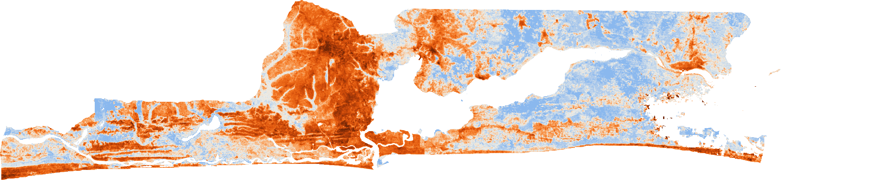
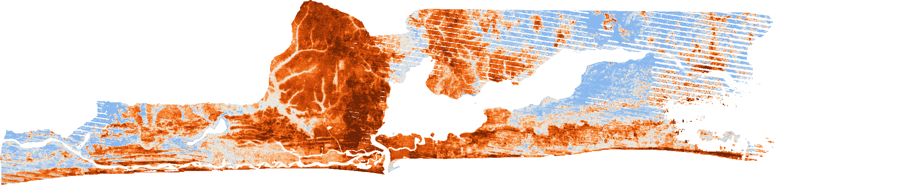
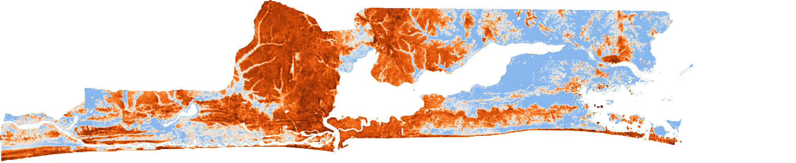

Research at a Glance: Two Analytically Distinct Components
This observatory integrates two complementary but methodologically distinct Earth observation analyses. Component A evaluates contemporary daytime Land Surface Temperature (LST), spectral surface properties, and population-weighted thermal screening across all 20 Local Government Areas (LGAs). Component B evaluates multi-decadal Surface Urban Heat Island (SUHI) intensification relative to an unbuilt rural reference zone across three historical period groups. Because the two components cover different temporal windows and measure different physical quantities, their observation counts and metrics are strictly separated below.
Contemporary Urban Heat & Exposure Screening
Dry-season median compositing exported from Google Earth Engine (script v2.0.0, 5 November 2026 UTC) covering 1 December 2022 to 1 April 2024 across all 20 LGAs.
Four-Decade Surface Urban Heat-Island Change
Pass-by-pass rural-referenced thermal anomaly (LGA Land LST minus 20 km Unbuilt Rural Reference LST) across Landsat 4, 5, 7, 8, and 9 dry-season passes grouped into three periods.
Research Background & Scientific Motivation
Rapid demographic expansion and physical urbanisation across Lagos State have transformed coastal wetlands, secondary forests, and agricultural peri-urban corridors into dense, impervious built environments. Replacing transpiring vegetation and moist soils with concrete, asphalt, and corrugated metal roofing alters the surface energy balance by reducing latent heat flux (evapotranspiration) and increasing sensible heat storage and daytime thermal emission.
Satellite thermal infrared radiometers measure Land Surface Temperature (LST)—the directional radiometric skin temperature of roofs, roads, tree canopies, and bare ground at the satellite overpass time (~10:30 local solar time for Landsat and MODIS Terra). While LST is physically distinct from the 2-metre ambient air temperature (Tair) experienced by pedestrians and cannot directly quantify physiological heat stress, it provides spatially continuous wall-to-wall coverage across administrative units that lack dense meteorological station networks.
Evaluating thermal maps in isolation, however, tells only half of the planning story. An industrial or bare-soil district may exhibit high surface temperature alongside relatively sparse residential density, whereas densely populated mainland LGAs combine elevated surface temperatures with high residential concentrations. Combining scaled LST with log-transformed population density provides a transparent spatial screening indicator to highlight where intense surface heat overlaps large residential populations. Simultaneously, comparing LGA temperatures against a fixed unbuilt rural reference within the same satellite pass cancels day-to-day atmospheric water vapour, haze, and seasonal drift, allowing historical surface urban heat-island (SUHI) change to be tracked across four decades of Landsat observations.
Research Objectives & Analytical Questions
To prevent temporal or methodological conflation, the study addresses two separate sets of research questions:
| Analytical Dimension | Component A: Contemporary Urban Heat & Exposure | Component B: Historical SUHI Change |
|---|---|---|
| Primary Research Questions |
1. How does daytime dry-season LST vary across the 20 LGAs of Lagos State? 2. Does LGA-level LST exhibit statistically significant global and local spatial clustering? 3. Where do elevated surface temperatures coincide with high population density? 4. How strongly is LST associated with vegetation (NDVI) and built-up (NDBI) indices, and do independent thermal sensors (Landsat 8/9 vs. MODIS) agree? |
1. How has the surface urban heat island (LGA Land LST − Rural Reference LST) changed across 1985–2003, 2004–2013, and 2014–2026? 2. What share of Lagos land exceeds the rural reference by more than 3°C in each historical period? 3. Which LGAs have sufficient dry-season observations to test long-term monotonic trends? 4. Is multi-decadal SUHI intensification associated with GHSL built-up expansion? |
| Temporal Support | Continuous dry-season median composite across 2022/23 and 2023/24 (1 Dec 2022 – 1 Apr 2024). | 28 quality-screened historical dry-season satellite passes grouped into 3 discrete periods (not an annual continuous series). |
| Spatial Analytical Units | All 20 Lagos State LGAs (land pixels only, excluding MNDWI greater than 0 open water). | 17 common LGAs observed in all three periods; 18 LGAs with at least 8 dry seasons for trend testing; 20 km exterior unbuilt rural reference zone. |
Study Area & Spatial Analytical Framework
Lagos State is situated along the low-lying southwestern coastal plain of Nigeria bordering the Gulf of Guinea. The administrative framework comprises 20 Local Government Areas (LGAs) defined by the FAO Global Administrative Unit Layers (GAUL 2015, Level 2). Stray topological line fragments present in the simplified GAUL polygons are removed during ingestion (scripts/ingest_gee_export.py) so Queen contiguity weights reflect true boundary sharing.
Because extensive estuarine water bodies (Lagos Lagoon, Lekki Lagoon, Badagry Creek, and Commodore Channel) depress raw polygon averages, open water pixels (Sentinel-2 MNDWI greater than 0) are masked out prior to aggregation. Every LGA thermal metric, spectral indicator, and WorldPop population density value is computed strictly over land area.
Dataset Provenance & Analytical Methodology
All satellite extractions are reproducible via documented Google Earth Engine scripts (scripts/extract_data_gee.js and scripts/extract_change_gee.py) and processed into verified statistical summaries via Python (scripts/analyze_uhi.py and scripts/analyze_change.py).
Table 1. Complete Dataset Inventory and Processing Lineage
| Dataset & Collection | Provider | Band / Variable | Spatial Resolution | Temporal Coverage | Processing & Role in Study |
|---|---|---|---|---|---|
| Landsat 8 & 9 Collection 2 Level-2 |
USGS / NASA | ST_B10 (Surface Temperature) |
30 m grid (100 m native TIRS) | Dec 2022 – Apr 2024 (113 scenes) | QA_PIXEL cloud, cloud-shadow & dilated-cloud masking; land-only dry-season median composite for Component A LST. |
| Sentinel-2 MSI Level-2A Surface Reflectance |
ESA / Copernicus | B3, B4, B8, B11, SCL |
10 m – 20 m | Dec 2022 – Apr 2024 (150 scenes) | Scene Classification Layer (SCL) cloud masking; dry-season median NDVI, NDBI, and MNDWI water mask. |
MODIS TerraMOD11A2 v061 |
NASA LP DAAC | LST_Day_1km |
1 km | Dec 2022 – Apr 2024 (32 composites) | 8-day daytime thermal composite used for cross-sensor ranking and bias evaluation against Landsat 8/9. |
| WorldPop Population Counts |
WorldPop | Residential Population | 100 m | 2020 reference year | Summed over LGA land area (MNDWI at most 0) to compute population density (people per km² of land). |
Copernicus DEMGLO-30 |
ESA / Airbus | Elevation & Slope | 30 m | Static baseline | LGA-level topographic elevation (m) and slope (degrees) characterization. |
| FAO GAUL Level-2 Boundaries |
FAO | 20 Lagos LGA Polygons | Vector administrative | 2015 vintage | Cleaned of stray line fragments during ingestion to ensure valid topological contiguity weights. |
| Landsat 4, 5, 7, 8, 9 Collection 2 Level-2 Archive |
USGS / NASA | ST_B6 (TM/ETM+), ST_B10 (TIRS) |
30 m grid (60–120 m native thermal) | Dry seasons 1985–2026 (374 passes screened; 28 accepted) | Same-day orbit frames mosaicked into passes; screened for rural reference cloud cover, cold anomalies, and LGA clear fraction. |
| EU GHSL Built-Up Surface Grid |
EC JRC | Built-up share | 100 m | 1985–2020 epochs | Defines the 20 km unbuilt rural reference zone (2020 epoch) and measures multi-decadal built-up expansion across LGAs. |
Core Mathematical Formulations
Contemporary Urban Heat & Exposure Findings (2022/23–2023/24)
7.1 LGA Temperature Distribution
Across the 20 LGAs of Lagos State, the unweighted mean of the 20 LGA-level mean daytime surface temperatures is 37.42°C (note: this figure represents the unweighted arithmetic mean across the 20 LGA means, not an area-weighted or population-weighted statewide mean). LGA-level mean LST spans an 8.37°C range from a minimum of 31.77°C in Epe (characterised by extensive eastern forest and agricultural cover) to a maximum of 40.14°C in Ajeromi/Ifelodun within the densely built mainland core.
7.2 Global Spatial Autocorrelation vs. Local Getis-Ord Gi* Clustering
Global Moran's I permutation testing (999 permutations) confirms statistically significant positive global spatial autocorrelation across all four spatial weight specifications. However, when testing individual LGAs using two-sided local Getis-Ord Gi* (k = 5 nearest neighbours) with Benjamini–Hochberg False Discovery Rate (FDR) control at α = 0.05 across the 20 tests, no individual LGA local hot or cold spot remains statistically significant after FDR correction. These two findings are statistically consistent: with n = 20 spatial units, the global thermal gradient from the hot mainland core to the cooler eastern/western peripheries is strong enough to establish overall clustering, whereas individual local z-scores do not clear the multiple-testing threshold.
| Spatial Weight Matrix | Moran's I | z-score | Permutation p-value | Local Gi* Significant LGAs (FDR α = 0.05) |
|---|---|---|---|---|
| Queen Contiguity | 0.5272 | 4.1293 | 0.002 | 0 hot / 0 cold after Benjamini–Hochberg FDR |
| k-Nearest Neighbours (k = 3) | 0.4294 | — | 0.002 | 0 hot / 0 cold after Benjamini–Hochberg FDR |
| k-Nearest Neighbours (k = 5) | 0.3656 | 4.1970 | 0.002 | 0 hot / 0 cold after Benjamini–Hochberg FDR |
| k-Nearest Neighbours (k = 8) | 0.2001 | — | 0.002 | 0 hot / 0 cold after Benjamini–Hochberg FDR |
7.3 Population-Weighted Heat Exposure Screening Rankings
Combining min-max scaled LST with min-max scaled log-transformed population density identifies five contiguous mainland LGAs at the top of the relative heat exposure screening distribution: 1. Ajeromi/Ifelodun, 2. Mushin, 3. Agege, 4. Shomolu, and 5. Surulere. A rank-based formulation of the exposure index yields a Spearman rank correlation of ρ = 0.9921 against the min-max index, demonstrating strong internal ranking consistency across scaling choices (while remaining a relative spatial screening construct rather than a direct health measurement).
7.4 Biophysical Regression Models & Multicollinearity Audit
Ordinary Least Squares (OLS) regression across the 20 LGAs shows strong bivariate associations between daytime LST and vegetation (NDVI-only model: β = −17.3976°C per unit NDVI, or −1.74°C per +0.1 NDVI; R2 = 0.9443) and between LST and built-up density (NDBI-only model: β = +26.5578°C per unit NDBI, or +2.66°C per +0.1 NDBI; R2 = 0.9800).
However, NDVI and NDBI are nearly collinear across the 20 LGAs (Pearson r = −0.9671), producing a Variance Inflation Factor of VIF = 15.4572 in the combined model. When both terms enter the regression simultaneously, the NDVI coefficient drops to β = −3.9644°C (95% CI: −8.6324 to +0.7036°C, p = 0.090978) and is not statistically significant at the conventional α = 0.05 threshold, whereas NDBI remains significant (β = +20.8128°C, p = 0.000008). Consequently, observational LGA-level regressions cannot isolate an independent causal cooling effect of vegetation separate from impervious built-up replacement.
| OLS Model Specification | Predictor Term | Coefficient (β) | Effect per +0.1 Index | 95% Confidence Interval | p-value | Model R2 / VIF |
|---|---|---|---|---|---|---|
| Model 1: Vegetation Only | NDVI | −17.3976 | −1.74°C | — | p less than 0.001 | R2 = 0.9443 |
| Model 2: Built-Up Only | NDBI | +26.5578 | +2.66°C | — | p less than 0.001 | R2 = 0.9800 |
| Model 3: Combined (NDVI + NDBI) | NDVI | −3.9644 | −0.40°C | [−8.6324, +0.7036] | 0.090978 (n.s.) | VIF = 15.4572 (r = −0.9671) |
| NDBI | +20.8128 | +2.08°C | — | 0.000008 |
7.5 Thermal Cross-Sensor Comparison (Landsat 8/9 vs. MODIS Terra)
Comparing LGA-level daytime LST from Landsat 8/9 (30 m grid / 100 m native thermal) against MODIS Terra MOD11A2 (1 km) yields strong spatial rank and linear agreement across the 20 LGAs (Spearman ρ = 0.9729, Pearson r = 0.9805). However, defining the difference as Landsat LST − MODIS LST reveals a systematic positive mean difference of +5.4006°C (RMSE = 5.442°C). MODIS Terra reads approximately 5.4°C cooler on average than Landsat 8/9 across Lagos LGAs due to coarse 1 km pixel mixing across water/vegetation margins and differences in retrieval emissivity and viewing geometry. High spatial correlation therefore confirms consistency in relative LGA ordering, not absolute temperature interchangeability.
Historical Surface Urban Heat-Island Findings (1985–2026)
8.1 Observation Screening Funnel & Uneven Temporal Support
Persistent cloud cover, coastal fog, and the 1992–1999 West African downlink gap in the historical Landsat archive severely restrict clear-sky thermal observations over coastal Nigeria. Out of 374 dry-season satellite passes considered across Landsat 4, 5, 7, 8, and 9 between 1985 and 2026, rigorous quality screening accepted 28 passes:
- 197 passes rejected because the 20 km exterior rural reference zone was mostly cloudy (fewer than 3,000 clear pixels, or less than ~100 km²).
- 106 passes rejected due to unmasked cloud/fog cold anomalies (more than 5% of Lagos land reading more than 3°C colder than the rural reference).
- 43 passes rejected because no individual LGA had at least 50% of its land area clear.
- 28 passes accepted and grouped into three periods: 6 passes in 1985–2003, 7 passes in 2004–2013, and 15 passes in 2014–2026.
2026 contains two accepted LGA-level records—Eti-Osa and Lagos Island—derived from satellite passes acquired on 19 December 2025 and 12 January 2026. Not all 20 LGAs were observed in 2026.
8.2 Period-Level SUHI Intensification Across the 17 Common LGAs
To compare periods on a consistent spatial footprint, period-level area-weighted SUHI medians and bootstrap 95% confidence intervals are computed across the 17 common LGAs that meet the minimum clear-land eligibility threshold in every historical period (1985–2003, 2004–2013, and 2014–2026). Across these 17 LGAs, the area-weighted surface urban heat island increased from +2.13°C in 1985–2003 to +3.66°C in 2004–2013 and +3.87°C in 2014–2026—representing a first-to-last period increase of +1.74°C (95% CI: +0.62 to +2.53°C). Across Lagos State, the share of land experiencing surface temperatures more than 3°C above the rural reference rose from 26.12% (1985–2003) to 38.88% (2004–2013) and 41.93% (2014–2026).
| Historical Period Group | Accepted Passes | Common LGAs Evaluated | Area-Weighted SUHI Median | Bootstrap 95% CI | Lagos Land Share Greater Than +3°C Above Rural Reference |
|---|---|---|---|---|---|
| 1985–2003 | 6 | 17 | +2.13°C | +1.60 to +2.96°C | 26.12% |
| 2004–2013 | 7 | 17 | +3.66°C | +3.07 to +4.49°C | 38.88% |
| 2014–2026 | 15 | 17 | +3.87°C | +3.11 to +4.44°C | 41.93% |
| First-to-Last Change (Δ) | 28 total | 17 common | +1.74°C | +0.62 to +2.53°C | +15.81 percentage points |

1985–2003 Period SUHI: +2.13°C (95% CI: 1.60–2.96°C) · 6 passes
2004–2013 Period SUHI: +3.66°C (95% CI: 3.07–4.49°C) · 7 passes
2014–2026 Period SUHI: +3.87°C (95% CI: 3.11–4.44°C) · 15 passes8.3 Dry-Season Trend Eligibility & Built-Up Expansion Association
Non-parametric Theil–Sen slope estimation and Mann–Kendall trend testing are restricted strictly to LGAs with at least 8 observed dry seasons. In the published archive, 18 LGAs meet this eligibility threshold and are testable, while 2 LGAs have insufficient dry-season observations and are reported as not testable. Benjamini–Hochberg FDR correction is applied across the 18 testable LGAs.
Comparing first-to-last period SUHI change against GHSL built-up surface expansion across the n = 17 common LGAs yields a statistically significant positive Ordinary Least Squares association of +1.232°C per 10 percentage-point increase in built-up share (95% CI: 0.359 to 2.106°C, R2 = 0.376, p = 0.008831). However, the non-parametric Spearman rank correlation across the same 17 LGAs is smaller and not statistically significant (ρ = 0.355, p = 0.161541), underscoring that the linear slope is sensitive to high-leverage urbanising LGAs and represents an observational association rather than proof of direct causation.
Synthesis, Interpretation & Scientific Discussion
Taken together, the contemporary and historical analyses reveal a coherent two-stage thermal geography across Lagos State:
- Core Consolidation vs. Peripheral Expansion: High contemporary surface temperatures and top-ranked heat exposure screening scores cluster tightly in older, high-density mainland LGAs (Ajeromi/Ifelodun, Mushin, Agege, Shomolu, Surulere) where impervious cover is nearly saturated and remaining vegetative canopy is minimal. Meanwhile, the four-decade historical record shows the spatial footprint of land more than 3°C warmer than the countryside expanding outward from 26.12% in 1985–2003 to 41.93% in 2014–2026 as peri-urban corridors urbanised.
- Why Statistical Discipline Matters at the LGA Scale: Aggregating pixel-level measurements into 20 administrative polygons introduces strong inverse coupling between NDVI and NDBI (r = −0.9671) and limits statistical power for local hotspot testing after multiple-testing control. Reporting both the significant global Moran's I (p = 0.002) and the null FDR-adjusted local Gi* outcome—as well as reporting both OLS (p = 0.0088) and Spearman (ρ = 0.355, p = 0.162) for built-up change—prevents over-interpreting administrative aggregates.
Methodological Limitations & Uncertainty Register
Every empirical finding in this observatory should be interpreted within the following explicit constraints:
Contemporary Analysis Limitations (Component A)
- LST Is Not Air Temperature: Satellite thermal sensors measure radiometric skin temperature of roofs, pavements, and canopy tops at ~10:30 local overpass time, not 2 m ambient air temperature or human thermal comfort.
- Dry-Season Scope Only: Composites cover December–March dry seasons (2022/23 and 2023/24) when cloud cover is lowest and thermal contrasts peak, excluding wet-season dynamics.
- Screening Construct Qualification: The Heat Exposure Index is a relative spatial screening product, not a direct measurement of individual exposure, morbidity, or mortality.
- Population Vintage (2020): Population density relies on WorldPop 2020 estimates rather than synchronous 2024 census counts.
- Administrative Boundary Vintage (2015): Spatial units follow the 20 FAO GAUL 2015 Level-2 LGAs.
- Small Sample Size (n = 20 LGAs): Analysing 20 polygons limits statistical power and increases sensitivity to influential observations.
- Ecological Fallacy & MAUP: LGA-level averages mask sharp neighbourhood-scale thermal variations inside large LGAs (Modifiable Areal Unit Problem).
- Severe NDVI–NDBI Multicollinearity: Because r = −0.9671 (VIF = 15.46), combined OLS regression cannot separate independent vegetation cooling from built-up warming.
- Sensor Bias vs. Ranking Agreement: High Landsat–MODIS correlation (ρ = 0.9729) reflects consistent spatial ordering, whereas absolute values differ by +5.40°C (RMSE = 5.44°C).
- Null Local Hotspots Under FDR: No individual LGA local Gi* hot or cold spot remains significant after Benjamini–Hochberg FDR correction.
Historical Analysis Limitations (Component B)
- 1992–1999 Archive Gap & Sparse Early Scenes: The West African Landsat archive has a major gap during 1992–1999 and few cloud-free scenes in the late 1980s, widening early confidence intervals.
- Limited & Uneven Pass Counts: Only 28 of 374 passes survive quality screening, distributed unevenly across periods (6, 7, and 15 passes).
- Period-Based, Not Continuous Annual Series: Results represent multi-year period medians rather than uninterrupted annual measurements.
- Overpass Time Drift Across Landsat Generations: Landsat 4, 5, and 7 had slightly different morning overpass times and thermal band widths than Landsat 8 and 9, and Landsat 7 ETM+ exhibits SLC-off scan-line gaps after May 2003.
- Rural Reference Non-Stationarity: The 20 km exterior rural reference (unbuilt in GHSL 2020) may have experienced agricultural clearing or forest loss since 1985, which would warm the reference and make historical SUHI growth conservative.
- GHSL 2020 Built-Up Proxy: GHSL 2020 stands in for the latest period's built-up fraction.
- Incomplete LGA Coverage in Trend Tests: Only 18 LGAs have at least 8 observed dry seasons for Theil–Sen / Mann–Kendall trend testing (2 LGAs are untestable), and only 17 LGAs are common to all three periods.
- Observational Built-Up Association: The positive OLS slope (+1.232°C per 10 pp built-up change, p = 0.0088; Spearman ρ = 0.355, p = 0.162) is an empirical association, not a causal proof.
Data Provenance, Reproducibility & Downloads
All processed datasets, statistical summaries, pass-screening logs, and processing scripts are openly published in the repository under an MIT code licence and CC BY 4.0 derived-data licence. Every number displayed on this page and inside the interactive explorer can be independently verified from the files below:
scripts/analyze_uhi.py (Moran's I, Gi*, OLS, VIF, sensor comparison).
data/change_summary.json
Component B four-decade historical SUHI summary generated by scripts/analyze_change.py.
data/lagos_change_lga.csv
Pass-by-pass LGA surface heat-island values across all 28 accepted Landsat passes (1985–2026).
data/lagos_change_scenes.csv
Complete quality-screening log of all 374 Landsat passes considered, accepted or rejected, and rejection reason.
data/lagos_ghsl.csv
Historical GHSL built-up fraction per LGA across epochs used in the built-up change analysis.
Reproducible Pipeline Architecture
scripts/extract_data_gee.js— Google Earth Engine extraction script (v2.0.0) for contemporary dry-season Landsat 8/9, Sentinel-2, MODIS, WorldPop, and Copernicus DEM.scripts/ingest_gee_export.py— Cleans FAO GAUL 2015 geometry fragments and validates exported schema.scripts/analyze_uhi.py— Computes contemporary spatial statistics, regressions, and diagnostics intodocs/data/summary.json.scripts/extract_change_gee.py— Extracts 1985–2026 Landsat passes, 20 km rural reference statistics, and period SUHI rasters.scripts/analyze_change.py— Applies pass screening, enforces 3-period common-LGA eligibility, and outputsdocs/data/change_summary.json.tests/— Automatedpytestsuite verifying data integrity, schema completeness, and statistical consistency.
Explore the Interactive WebGIS Application
Connect these research findings directly to the spatial data inside the full interactive analytical application (explore.html). The explorer preserves all six analytical tabs and six interactive map layers: